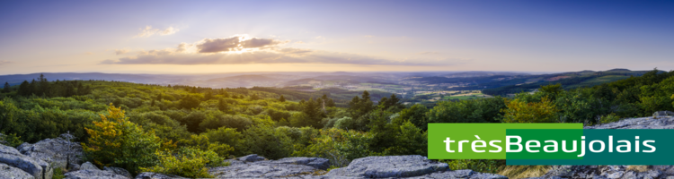

-Works
trèsBeaujolais
- Marque territoriale
- Promotion
- Concpet vidéo
Créations
- Charte Graphique
- Flyer
- Kakémono
- Tournage
- Montage vidéo

trèsBeaujolais est la marque territoriale du Beaujolais. Elle promeut l'ensemble du territoire, ses acteurs, et contribue à sa dynamisation. trèsBeaujolais est une démarche fédératrice qui regroupe sous une même bannière tous les acteurs du territoires, ainsi elle possède un large réseaux d'ambassadeurs, d'entreprises et d'artisans.